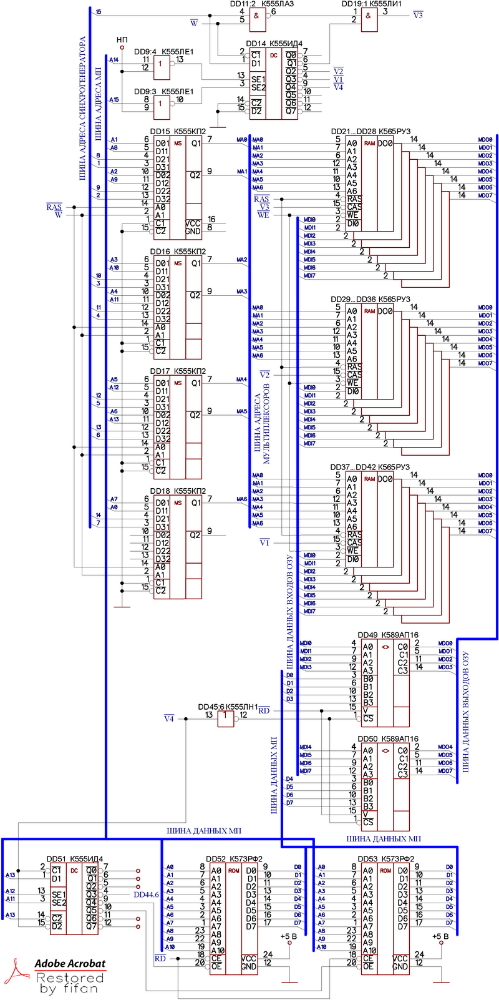
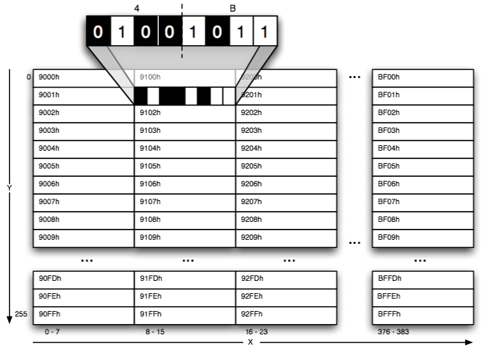
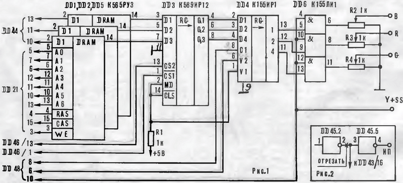
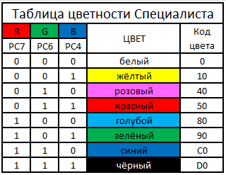

www.spetsialist-mx.ru
САЙТ О ПК "СПЕЦИАЛИСТ" И ЕГО КЛОНАХ
| |
|
| ГЛАВНАЯ | |
| МИКРОПРОЦЕССОР | |
| СИНХРОГЕНЕРАТОР | |
| ПАМЯТЬ | |
| ИНТЕРФЕЙС | |
| КЛОНЫ | |
| ПРОГРАММЫ | |
| ИГРЫ | |
| СПЕЦИАЛИСТ МХ | |
| ПЛИС | |
| ССЫЛКИ | |
| ОБРАТНАЯ СВЯЗЬ |
ПАМЯТЬ
По заданному фронту сигнала /RAS происходит запись младших семи бит адреса в адресный регистр микросхем памяти. Одновременно происходит переключение мультиплексоров, и в ОЗУ поступают старшие 7 бит адреса. В зависимости от состояния сигнала /W (дисплей) на ОЗУ поступает код адреса либо от процессора, либо со счётчиков. Арбитр ОЗУ выполнен на триггере DD12.2. Этот узел вырабатывает сигнал W длительностью 500 нс. в том случае, если на выводе 19 DD43 (микропроцессора) появляется сигнал SYNC, предваряющий такт обращения процессора к ОЗУ. Если при этом отсутствует сигнал /RD (чтение), что неизбежно означает начало цикла записи информации в ОЗУ, на выводе DD7.2 вырабатывается сигнал /WE (запись ОЗУ), совпадающий во времени с сигналами /V1, /V2, /V3 выборки (/CAS) микросхем ОЗУ. Информация из ОЗУ поступает на шину данных и обратно через шинные формирователи DD49, DD50.
Узел выборки ОЗУ состоит из дешифратора DD14 и элементов DD11.2, DD19.1. Элементы DD9.3, DD9.4 служат для преобразования адреса при начальном пуске компьютера. Действие сигнала "сброс" не нарушает регенерацию ОЗУ.
Выборка ПЗУ и интерфейсных микросхем обеспечивается дешифратором DD51. Возможно подключение дополнительно шести микросхем К573РФ2 или КР580ВВ55. При этом на каждую микросхему приходится 2 кБайта адресного пространства.

Цикл регенерации ОЗУ - 128 мкс. Для отображения информации на экране телевизора используется часть основной памяти ЭВМ. Это также упрощает конструкцию, но и одновременно создает проблему разрешения конфликта процессора и дисплея при обращении к ОЗУ. Когда обращение процессора к ОЗУ отсутствует, контроллер дисплея (совокупность элементов, предназначенных для формирования изображения на экране телевизора) может считывать информацию из ОЗУ каждые 0,5 мкс. При этом в конце цикла, содержащего 2 обращения к ОЗУ по одному и тому же адресу, происходит запись байта информации в регистр сдвига и последующая её передача на видеовыход. Если же микропроцессор обращается к ОЗУ (для этого необходим интервал 500 нс.), тогда в зависимости от того, в каком цикле ОЗУ это произошло, информация для отображения в случае необходимости задерживается в буферном регистре на 500 нс. с последующей выдачей на экран. Это позволяет сделать работу процессора независимой от дисплея. Для получения полного телевизионного сигнала в формирователе видеосигнала смешиваются импульсы, снимаемые со сдвигового регистра, с импульсами, вырабатываемыми синхрогенератором. Схемотехническое пояснение способа хранения изображения в видео ОЗУ показано на рисунке.

Память состоит из постоянного запоминающего устройства (ПЗУ) объёмом 2...12 кБайт (К573РФ2) и оперативного запоминающего устройства (ОЗУ) объёмом 32 / 48 кБайт (К565РУЗ). Схема распределения памяти представлена в таблице.
Адреса |
Назначение |
Объём |
0000H...3FFFH |
ОЗУ пользователя |
16 кБайт |
4000H...7FFFH |
ОЗУ резервное |
16 кБайт |
8000H...8FFFH |
ОЗУ пользователя |
4 кБайт |
9000H...BFFFH |
Экранная область |
12 кБайт |
C000H...C7FFH |
ПЗУ - загрузчик |
2 кБайта |
C800H...F7FFH |
Дополнительные ПЗУ и ВУ |
12 кБайт |
F800H...FFFFH |
Регистры |
2 кБайт |
КОНТРОЛЛЕР ЦВЕТА
Для усовершенствования "Специалиста" нужен формирователь RGB (контроллер цвета) для сопряжения с цветным телевизором. Устройство представляет собой модуль, конструктивно оформленный в виде отдельной приставки. Модуль имеет четыре выхода: R, G, B и Y+SS. Каково же их назначение? Многообразие цветовых оттенков на экране телевизора складывается из трёх основных цветов – красного (Red), зелёного (Green) и синего (Blue). Соответственно у цветного кинескопа имеются три электронные пушки и столько же видеоусилителей: R, G, B. Отклонение лучей осуществляет блок развёрток. Следовательно, для цветного телевизора нужно сформировать три видеосигнала R, G, B и сигнал синхросмеси (Y+SS). Данную функцию и выполняет контроллер цвета.

Модуль RGB собран на шести микросхемах (см. рисунок) и состоит из дополнительного ОЗУ (DD1, DD2, DD5), буферного регистра DD3, выходного регистра DD4 и формирователя RGB сигналов на микросхеме DD6. Код цвета выставляется на выводах 10, 11 и 13 параллельного адаптера. При записи информации на экранное ОЗУ одновременно записывается код цвета в дополнительное ОЗУ, работающее синхронно с экранным. Назначение регистра DD3 аналогично DD46 на схеме компьютера. В течение 1 мкс. на выходе регистра DD4 сохраняется код цвета, который стробируется яркостным сигналом. Таким образом, светлые элементы изображения окрашиваются в один из семи цветов. Вместе с чёрным получаем восемь цветов. Подключение модуля к выводу 13 DD44 вызвало необходимость изменить схему начального пуска. Теперь схема начального пуска отключается командой FBH (разрешение прерывания, см. Рис.2 выше).
